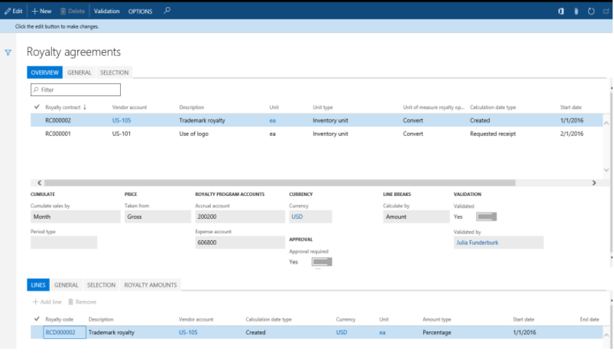
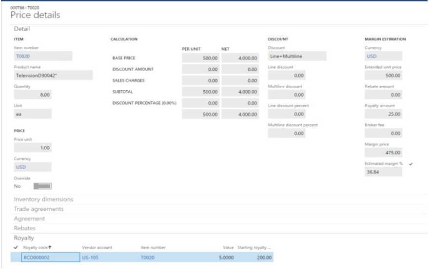

Royalty contract management
[!include[banner](../includes/banner.md)]Royalty contract management is intended for companies that exercise the right to use a third party's assets and/or intellectual property. It helps companies better manage their royalty agreements by automating tasks that are involved in administering, tracking, and making royalty payments.
This topic provides a broad overview of the typical process for handling royalty fees:
- Register details of the negotiated royalty contract.
- Run negotiated contracts through ongoing sales, and generate royalty claims.
- Approve and process the generated claims, so that they can be passed on to Accounts payable (A/P) for payment.
Audience and purpose
The information in this topic is intended for business decision makers in enterprise companies, in capacities such as sales manager, accounting manager, and A/P manager, who have the following responsibilities:
- Negotiating contracts with the licensor
- Recording royalty agreement terms and fee rates in the system
- Managing staff that processes royalty claims and makes fee payments
People in these roles are looking for ways to achieve these goals:
- Flexibly accommodate different definitions of royalty contracts and their conditions.
- Reduce the administrative burden and errors that are associated with tracking and processing royalty claims.
- Improve cash flow forecasts by accruing for future payables and avoiding interest on delayed payments.
Royalty contracts
A royalty contract is a record of an agreement with an asset or intellectual property owner. It specifies the negotiated terms and conditions under which the licensor qualifies for a monetary reward when the licensee uses its property to obtain revenue.
Royalty contracts are registered on the Royalty contracts page. To open the Royalty contracts page, select Accounts payable > Broker and royalties > Royalty agreements.

The Selection tab in the lower part of the page shows the products that qualify for a royalty fee.
On the General tab in the upper part of the page, several fields provide more details about the agreement's conditions as they were negotiated with the licensor:
- The Cumulate sales by field specifies the period that a royalty amount will be calculated for, based on cumulative sales. For example, the period might be a month. Alternatively, to calculate the royalty amount every time that a sales order line is invoiced, select Invoice.
- If the Approval required option is set to Yes, a royalty program owner must approve the claims before a royalty can be turned into an invoice that is payable to the licensor.
- The Accrual account and Expense account fields must specify account numbers that will receive accrued amounts during the intermediate stage between approval and processing.
You set up royalty rates on the Royalty amounts tab in the lower part of the page. To set up the rates as tiers, add a line for each tier, and set the From value and To value fields.
Important
To make an agreement valid, you must select Validation on the Action Pane. The Validated option on the General tab in the upper part of the page will then be set to Yes.
Sell products that qualify for a royalty fee and generate a claim
When a sales processor creates a sales order for a product that the company has a royalty contract for, if the order line's details qualify for the royalty, the program identifies the future royalty fee.
To see whether a sales order line qualifies for a royalty fee, select Sales order line > View > Price details. On the Price details page, select the Royalty FastTab.

The Royalty FastTab shows the royalty fee from the valid contract code that is applied to a line. Additionally, the Royalty amount field under Margin estimation on the Detail FastTab specifies the royalty fee per product unit.
Note
To access the Price details page, on the Accounts receivable parameters page, on the Prices tab, on the Price details FastTab, set the Enable price details option to Yes.
The royalty claim is created when the sales order is invoiced.
Process claims and pass them as payable to A/P
Royalty claims that are generated represent future payments to the licensor. The contract owner cumulates the claims for the relevant period and then creates an interim liability for the licensor by approving those claims.
The royalty agreement owner is responsible for periodically reviewing and, as required by the company's policy, approving the claims that are generated. After the claims are approved, the A/P administrator passes them as purchase invoices to the regular payable processing.
To view all the claims, select Accounts payable > Broker and royalties > Royalty claims.
On the Royalty claims page, the Starting royalty amount field specifies the fee amount that, after it's approved and processed, will be paid to the vendor as a royalty.
The fields in the Sales section of the page specify the details about the originating sales invoice, such as the invoice number, invoice line net amount, and quantity.
Note that when a claim is generated on a time basis, its status is set to To be calculated. This status is used because the royalty is granted on that time basis. The claim won't be included, together with other claims, in the cumulative calculation until the end of the period.
If there are multiple sales orders for the same vendor, the claims must be recalculated so that any cumulative effect is considered. On the Action Pane, select Cumulate.
When the Cumulate action is run, an accrual journal for the claim amounts is posted. To view the details of the posting, find the claim in the list of royalty claims, and then, on the Action Pane, select Royalty transactions to see and access the accrual journal.
The posted voucher specifies that the royalty accrual account is credited for the expected royalty fee, and that the interim accrued royalty expense account is debited for the expected expense.
To move the claims to the regular A/P process, the A/P clerk must complete the royalty claim. On the Royalty claims page, on the Action Pane, select Process.
The following events occur, and the claim's status is changed to Completed:
- A Royalty accrual journal posting reverses the previous interim amounts on the accrual payable and expense amounts.
- A vendor invoice for the royalty amount is created and posted.
- As a result, the vendor's payable account is credited, and the royalty fees account is debited.
Note
The account number for royalty fees is specified for the procurement category that is used on the purchase invoice line for the royalty. That procurement category, in turn, is set on the Broker and royalty tab of the Accounts payable parameters page.
To see the vendor invoice number, open the Royalty transactions page from the royalty claim.
Summary
The process for handling royalties involves multiple manual tracking tasks that are often tedious. By automating those tasks, the royalty contract management feature helps you move through the following process:
- Generating accurate royalty claims
- Accruing the expected payables and interim expense in the general ledger
- Updating the vendor balance and the income statement with the royalties that are due
In this way, the feature helps you avoid potential errors and interest on unpaid royalties, and contributes to a timely cash flow forecast for the company.
Submit your requests to the Documentation Team